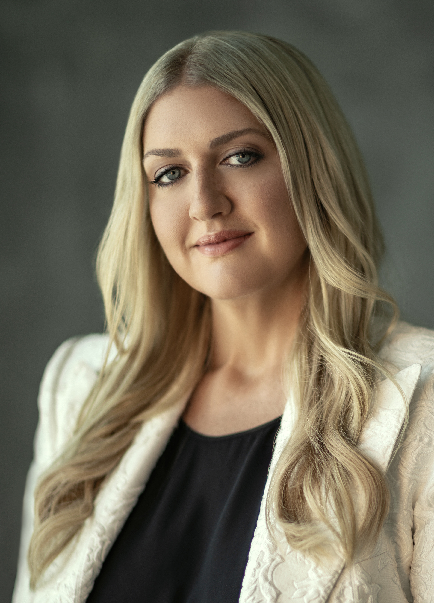

Enter your chapter to open the playbook. Your access is recorded for the region.
Confidential — for YPO MENA member and officer use. Access is logged to support regional governance.
Before you continue
Chapter Board Checklist
Please download the following Chapter Board Checklist to ensure you have completed the pre-term and first board meeting items to ensure you start the year off strong.
Who we are as a region — leadership, structure and the shared language of YPO MENA.
Welcome from the Regional Chairs
Welcome to the United MENA Playbook
Dear YPO MENA Leaders,
Welcome to the United MENA Playbook.
This playbook has been created as a practical resource to support every YPO MENA Chapter throughout the year. Whether you're a Chapter Chair, Chapter Manager, Officer, or Regional Executive, you'll find guidance, tools, best practices, and resources to help you lead with confidence and deliver an exceptional member experience.
Inside, you'll find support across every stage of the Chapter journey—from Chapter Commitments and New Member Onboarding to Governance, Portfolio Leadership, operational guidance, and much more. Our goal is to bring everything you need into one place, making it easier to navigate your role, share knowledge, and build on the successes of Chapters across our region.
The United MENA Playbook reflects our belief that we are stronger when we learn from one another. By sharing proven approaches, practical resources, and regional best practices, we hope to strengthen every Chapter while continuing to foster the spirit of collaboration that defines our region.
This is a living resource that will continue to evolve alongside our Chapters. We encourage you to return to it often, make use of the tools it contains, and share your feedback so that together we can keep making it even better.
Thank you for your leadership, your commitment to your Chapter, and your dedication to creating extraordinary experiences for our members. Together, we will continue building a stronger, more connected, and more impactful United MENA.
With appreciation,
Moodi BukhariYPO MENA Regional ChairElias ChabtiniYPO MENA Regional Gold Chair
REX Directory
The FY26–27 Regional Executive Committee.
Moodi Bukhari
Regional Chair
Elias Chabtini
Regional Chair (Gold)
Helen Bannayan
Past Regional Chair
Amit Gandhi
Regional Learning Officer
Mark Troy
Regional Gold Learning Officer
Jason English
Regional Forum Officer

Sarah Abudawood
Regional Membership Officer
Hachem Ghandour
Regional Member Engagement Officer (Gold)
Preyen Dewani
Regional Strategic Partnerships Officer
Dayala Dagher Hayeck
Regional Area Officer: Member Engagement (Y)
Shivani Arora
Regional Spouse/Partner Officer
Jana Yamani
Regional Family Officer
Sabina Hadi
Regional Spouse Forum Officer
Management Directory
Your YPO MENA regional management team — and what to ask each of them.
Chapter Managers, Regional Member Engagement Officers and Chapter Member Engagement Officers.
Maria Luz Domingo
YPO MENA Regional Forum and Learning Manager
Ask Maria about
Forum health and trainings across MENA.
Regional and chapter forum officer support tools.
Forum education and development.
Forum best practices, help and resources.
Speaker resources.
Day chair workshops.
Regional and chapter learning and assistant learning officer collaboration and support tools.
Maria supports
Regional Learning Officers, Regional Forum Officers, Regional Spouse Forum Officers, Chapter Learning Officer, Chapter Forum Officers and Chapter Spouse Forum Officers.
Neeta Gandhi
YPO MENA Regional Membership Development Manager
Ask Neeta about
Best practices for membership development in your chapter.
MENA's membership program.
Global membership development strategy.
Creating new chapters.
Chapter membership portals.
Neeta supports
Regional Membership Officers and Chapter Membership Officers.
Lauren Aird
YPO Global Family Manager, EMEA
Ask Lauren about
Family and spouse/partner requests and data.
YNG queries.
Parenting and YSP collaboration and connection.
Lauren supports
Regional Spouse/Partner Officers, Regional Family Officers, Chapter Spouse/Partner Officers and Chapter Family Officers.
Regional Overview
The chapters that make up the YPO Middle East / North Africa region, at a glance.
Regional Overview
Regional Overview
The chapters that make up the YPO Middle East / North Africa region.
How a chapter is led and run — the chair's role, governing documents, operations, succession, finance and the chapter manager relationship.
Running a chapter well
Chapter Chair Role and Responsibilities
One-year term.
Mission. Lead the executive committee in creating a high-value chapter experience for members, using best practices and YPO resources and tools to drive member engagement and create a healthy chapter.
All you need to know about your chapter chair journey.
Chapters appoint chapter chairs in November for a one-year journey beginning in July. The roadmap below maps the full arc, from exploring the role through to a confident handover.
Chapters appoint chapter chairs for the one-year journey beginning in July.
January – March
Prepare and connect
Review your role description and watch the chapter chair essentials video.
Review the dedicated chapter chair resources and assess data.
Connect with peers, such as outgoing chapter chairs or other incoming chapter chairs, to begin transition, discuss initiatives and potential collaborations.
Learn about the focus areas in your future chapter executive committee (ExCo)/board.
Build a chapter conduct committee.
Attend the Chapter Chair Workshop at the Global Leadership Conference to meet your peers and dive into the next steps with the guidance of experienced champions.
April – June
Set the vision
Define your vision, objectives, and goals for the year.
Conduct the chapter health survey and review other data available.
If applicable, attend the Q4 regional governance meeting (e.g. RBM) and review pre-reads.
Host a strategic planning and/or game plan session for your chapter ExCo/board to finalize smart goals and secure approval.
July – September
Your chapter chair year begins
Engage in the chapter chair community.
Schedule 1:1 onboarding with your regional chair to ensure you are set up for success.
Review chapter commitments and learn how your chapter health is measured.
Explore possible future leadership roles in YPO.
Host chapter ExCo/board meeting(s). Many chapters choose to host these on a bi-monthly basis.
Support membership renewal efforts.
Allocate financial support to your chapter ExCo/board officers.
October – December
Build momentum
Attend the Q2 regional governance meeting (e.g. RBM) and review pre-reads.
Continue engagement by hosting chapter ExCo/board meeting(s).
Collaborate with your chapter ExCo/board to get your chapter succession plan in place by 1 November.
Promote Officer Essentials and Global Leadership Conference attendance to incoming chapter ExCo/board.
Review your goals and identify any actions necessary towards achieving them.
January – March
Transition your knowledge
Host ExCo/board meeting(s).
Start planning for the graduation of transitioning members.
Review chapter health metrics and identify what can be done to improve.
Start transitioning your knowledge to your successor.
Encourage your chapter manager to attend the Chapter Manager Workshop.
April – May
Recognise and prepare
If applicable, attend the Q4 regional governance meeting (e.g. RBM) and review pre-reads.
Continue to engage by hosting chapter ExCo/board meeting(s).
Prepare for the YPO Global Awards Program.
Support your incoming chapter chair with hosting a strategic planning and/or game plan session.
June
Hand over well
Ensure a proper handover to the incoming chapter chair.
Send farewell emails to your chapter ExCo/board and chapter members.
Host a graduation ceremony.
Celebrate achievements and recognize your peers who supported you throughout the year.
Your chapter chair roadmap includes
Monthly emails of support.
Timely, actionable information.
A step-by-step planning guide.
Access to tools and global best practices.
Opportunities for cross-chapter collaboration.
Benefits from regional and global initiatives.
YPO management support: Regional Director. For more information, email champion@ypo.org.
Chapter Chair on the Regional Board
Regional Board Overview for Chapter Chairs.
Regional board function
Chapter Link
Communicate chapter needs to the YPO Global Board of Directors and inform chapters of global updates and initiatives.
Support
Apply regional and global support to chapters.
Activities
Organize activities and initiatives to engage members and chapters.
Best Practices
Give space for chapters to share best practices.
Identify Champions
Recruit passionate member champions to serve at the chapter, regional, and global level.
Regional board structure
REX + Chapter Chairs
The regional board is comprised of elected regional officers that serve on the regional executive committee (REX) and chapter chairs from the region.
The regional chair leads the regional board.
Chapter chair role
Meetings and vote
Meetings. Attend Regional Board Meetings (RBM) to conduct the business of the region and share best practices. Attend regional board calls as needed.
Vote. Vote as a chapter representative on regional board matters. Identify a proxy if you are unavailable for a vote.
Chapter Governance Documents
The governing documents every chapter chair should know — and where to find them.
The YPO Policies and Procedures Manual (P&P) and the YPO Operations Manual set the standards that apply to every chapter. Chapter by-laws sit alongside them, tailored to the country in which the chapter is legally incorporated.
Running efficient, well-governed chapter board meetings and annual gatherings.
Holding an Effective Board Meeting
1. Set a board meeting schedule in advance
There is likely not enough going on to justify holding monthly meetings — you don't need to meet every month.
Consider meeting quarterly. If necessary, hold chapter board conference calls in between.
Meetings should not last more than two hours.
2. Meeting prep (critical)
The key to holding an effective meeting is the work that happens ahead of the meeting. Work with your Chapter Manager (CM) to indicate where the chapter is relative to YPO chapter health metrics.
Chapter leadership team should be working in the time between meetings — set the expectation at the beginning of the year that chapter officers submit their updates in writing to the CM at least a week ahead of each meeting (assuming quarterly). Consider using the forum update as a template for director reports, and include these updates in advance materials.
Chapter financials should be included in meeting materials too.
Set the expectation that advance materials are reviewed before the meeting, and that discussion begins where the materials end.
3. Meeting agenda
Roll call. Call the meeting to order and take roll call — this need not be formal; the CM reads the names of those present and announces who is absent, to determine whether quorum has been achieved. If quorum is not achieved, call an end to the meeting; officers present may stay on, but no official chapter business can take place, and anything after this point isn't captured in the meeting minutes.
Approval of minutes. Important things happened in your previous meeting — before anything else, make sure everyone agrees with the record of that meeting.
Committee reports. The chapter chair goes around the room and asks officers if there's anything, beyond what's in their written update, that they wish to raise for discussion with the board. It's important this doesn't turn into a serial download session.
Treasurer's report. The Chapter Financial Officer provides an executive summary of chapter finances.
Old business. Could be an event that's coming up.
New business. Space to raise any opportunities available to the chapter (e.g. a new sponsorship opportunity). If applicable, the regional representative presents global and regional YPO content.
Open mic. An opportunity for board members to make any comments, and for recognition.
Adjourn. Call for a motion to adjourn, then adjourn the meeting.
4. Tips for effective meetings
Conduct forum connection activities at the beginning of your meetings.
Stay on topic. Set the expectation that when discussions stray, it's the responsibility of not only the chair but all officers to make a point of order to bring the discussion back on track.
Invite a member of the regional executive committee or your regional director to at least one meeting per year.
Hold meetings at interesting locations.
Consider inviting a chapter member to share a story with the board as a learning opportunity.
Consider scheduling meetings in the evenings so you can roll into a fun activity after chapter business (e.g. a golf driving range).
Consider using a messaging or team collaboration tool (e.g. WhatsApp or Slack) to keep board members connected and informed between meetings/calls.
A sample Guiding Principles and Statement of Commitment for chapter board members to sign, so board meetings maintain the YPO culture of professionalism, respect and effective governance — plus a handover document signed by the incoming and outgoing officer to ensure handover is carried out correctly.
The Game Plan strategic planning methodology was developed in and by the EMEA super-region to ensure every incoming board had the opportunity to prepare for their year in leadership and governance.
Since its inception, Game Plan's geography has spread and 140+ sessions have been executed for chapters, networks and REX. 38 chapters have repeated Game Plan sessions, and the Chapter Health score for those chapters has increased by 13.5% between the first and last session. The average session rating is 4.61 out of 5.
Our vision
To elevate the YPO experience for every member, spouse/partner and family in the world.
Our mission
To empower boards through strategic planning sessions, helping them prepare and deliver only-in-YPO value.
Session facilitation
Sessions are facilitated by certified Game Plan Coaches, who are YPO members bringing both chapter and regional board experience. Our coach champions provide this facilitation service at no charge — it is their way of giving back to the organization. The only cost is any associated travel to the meeting location for the coach.
The role of modules
Modules are deep dives into specific topics or issues a chapter needs to address. Normally based on the major challenge(s) a chapter is facing, the coach will recommend the most appropriate module. Examples include:
Alignment on deliverables to address needs and expectations, using data as its foundation.
Clear comprehension and effective application of best practices in how officer roles interconnect and enhance each other's contributions within collaborative initiatives.
Development of SMART goals to focus on throughout the year, creating accountability for both officers and the membership, resulting in value for members.
Formats
Game Plan sessions are broken into 50-minute sprints with 10-minute breaks. This has proved highly effective in achieving the strategic meeting outcomes.
Session
Delivery
Outcomes
4 hours
A 4-hour strategic Game Plan session delivered as one session. A four-hour virtual session is only for repeat sessions.
Chapter Playbook, including SMART goals.
6 hours
A 6-hour strategic Game Plan session delivered as two 3-hour sessions on different, ideally consecutive days for virtual, or one day physical.
Chapter Playbook, including SMART goals and the ability to deep dive into one module.
8 hours
An 8-hour strategic Game Plan session delivered as two 4-hour sessions on different, ideally consecutive days for virtual, or one day physical.
Chapter Playbook, including SMART goals, the ability to deep dive into one module, and completion of the chapter's vision and values.
Building the leadership ladder, three years ahead.
Succession planning is what turns a good year into a strong chapter. When the next chair, and the chair after that, are identified early, leaders arrive prepared rather than surprised — officers have time to train, relationships carry across transitions, and the chapter's strategy survives a change at the top. It also widens the leadership pool: planning ahead surfaces quieter champions who would never put themselves forward at short notice, and gives members a visible path into service. Chapters are expected to have a succession plan in place by 1 November, and the worksheet below helps map the ladder three years into the future.
The Champion Catalog gives an overview of the champion positions available across YPO — at chapter, regional, global and network level — a useful starting point when identifying where members might serve next.
Budget and Finance
Recommended chapter budget allocations.
One of the most difficult things to do when setting up a chapter budget for a new fiscal year is figuring out how much to spend in each category. Some chapters also want to bring their budgets more in line with modern-day YPO best practices. The whole purpose of a budget is to set you straight on your spending for the fiscal year, and make sure you're focusing on all areas of your portfolio buckets to maintain a healthy chapter.
The amount of money available depends a lot on how much you have received in renewals and any revenue from the previous year. We know that:
Expenses vary by chapter.
Costs depend on membership size.
Costs also depend on the location of events and resources.
Every chapter is different and there is no perfect combination. For general guidance, the region recommends the following percentage ranges when developing your chapter budget.
Education / Learning
35%–60%
Every chapter is different; the importance is to have a world-class learning program, and the value is to give members a chapter experience that will help them learn, connect and grow.
Family
10%–15%
Family funding can contribute to overall chapter engagement. Family involvement increases the stickiness for YPO members to want to stay in YPO. With increased engagement comes a healthier chapter.
Spouse / Partners
10%–15%
Ensuring inclusiveness makes YPO real for spouses/partners and kids. They get to experience why YPO is important to the member, and receive value themselves.
Forum
5%–10%
Forum participation can vary from chapter to chapter. We recommend that a budget be calculated based on the chapter's forum goals.
Membership
4%–6%
Membership initiative funds support prospective member recruitment events, candidate meetings (breakfast, lunch, coffee, and/or cost of transportation to site visits) and potential member referral bonus campaigns, to ensure the chapter remains at a healthy membership level.
Administrative / Employee
15%–20%
Chapter administrator funding is key to your chapter's success. CAs can range from part-time to full-time with a variety of responsibilities in the chapter. Investing in your CA will benefit your chapter.
Operative
3%–5%
As with any budget, you have to make sure other buckets are covered, such as marketing, postage, bank fees, office, internet and phone.
Legal / Professional Fees
3%–5%
All officers and chapter administrators need their yearly training. We recommend sending at least one officer to the GLC and CLW for training. It is also required to send your CA to the Chapter Administrator Workshop (CAW) every two years. Because the chapter is its own legal entity, you will need to budget for tax preparation.
These are guidance ranges rather than a fixed split — they overlap, and are not intended to total 100%.
Audited numbers / board clearance — content to be added.
Strategic Partnerships for Chapters
Chapter strategic alliances — best practices.
Chapter strategic alliance partners add value to the chapter by enhancing the chapter budget, providing learning content and other resources. As your chapter develops a strategic alliance program, keep the following best practices in mind.
Value
Think beyond cash. How can the partner provide member value to the chapter through learning content, resources, venues and experiences?
Connect
Touch base regularly with the partner to see if expectations are being met by both sides, and address emerging issues.
Opportunities
Create meaningful opportunities for the partner to meet chapter members. You cannot guarantee new customers, but you can position them with opportunities.
Agreement
Work with legal counsel to create a written agreement defining what is expected by both sides.
Privacy
Never share member contact information with a strategic partner, for any reason.
Code of Conduct
Ensure the strategic partner adheres to YPO's Code of Conduct for non-solicitation and confidentiality.
YPO policies provide clear guidelines for addressing inappropriate member conduct, so that the safe haven of trust is protected for every member. A standing Chapter Conduct Committee is what makes those guidelines usable — it gives a chapter a fair, consistent process to review conduct issues, vet champions, and mitigate risk and liability, rather than improvising under pressure. Having the committee in place before an issue arises is the point: it protects the members involved, the chapter's leadership, and the culture that makes YPO worth belonging to. To keep YPO a place for learning, growth and fun among peers and their families, chapter chairs are strongly encouraged to lead their members through implementing the recommended steps in the toolkit.
The Conduct Committee Toolkit provides guidelines on how to off-board members from your chapter. The process below keeps decisions consistent, well-documented and fair to everyone involved.
01
Identification
Concern identified and documented by the Chapter Manager in consultation with the Chapter Chair (CC) and/or Chapter Membership Officer (CMO).
02
Chapter Conduct Committee (CCC) review
Concern reviewed against YPO standards, chapter expectations, and relevant facts. Documentation and context assessed.
03
Decision point: resolved at CCC level
Recommendation agreed upon and documented.
04
Not resolved / complex case
Escalated to the Global Conduct Committee (GCC) for further review and guidance.
05
Closure and documentation
Outcome documented, appropriate records maintained for transparency and consistency.
Officer Training
Global Leadership Conference (GLC) dates, FY26–27.
Registration will open in Q2. Virtual sessions will be announced closer to the time.
GLC — Bangkok, Thailand
15–17 March 2027
GLC — San Diego, USA
3–5 May 2027
Working with your Chapter Manager
The CM partnership is crucial to the success of the chapter.
The Chapter Manager (CM) partnership with the chapter executive committee is crucial to the success of the chapter. CMs serve as the chapter operations manager — wearing many hats, executing daily operations, and providing direct support for chapter officers, members and spouse/partners.
Best practices for working with your Chapter Manager
Give direction
Before the start of your chapter chair year, discuss the chapter priorities and strategic plan with your CM. Give clear direction on where the CM will allocate time, and work with them through the year to reprioritize work when new projects or events emerge.
Set member expectations
Inform chapter officers and members what they can expect from the CM. Ensure the CM is not utilized by members for non-YPO requests that are best managed by a personal assistant.
Be connected
Meet with your CM on a regular basis (weekly or bi-weekly). Include your CM in executive committee calls, meetings and discussions so they can best serve the chapter. Be in the know on their work, and work to resolve issues before they escalate.
Tap their knowledge
Chapter Managers have institutional knowledge of the chapter. They are a valued resource in identifying strategic priorities to enhance the chapter experience and member value.
Safe haven
In line with the YPO Code of Conduct, provide a safe haven of trust, respect and confidentiality for your CM while working with the members and chapter officers.
Provide feedback
Feedback is critical to the CM's professional development and their ability to continually meet the expectations of the chapter board and members. Conduct an annual review in May or June as your Chapter Chair year closes.
Encourage training
YPO continually evolves. Encourage your CM to attend workshops, webinars and other ad hoc training so they can stay up to date on YPO and learn best practices from their peers.
Contract review
Chapters are self-governing and the CM role varies year by year based on chapter needs. Review your CM contract or employment agreement annually in June to ensure it reflects the chapter's needs and the CM's current role.
CM Guiding Principles: a sample document for Chapter Managers to sign, to ensure CMs are aligned with the expectations of the chapter.
Chapter Support Program (CSP)
The Chapter Support Program (CSP) connects chapters with trained virtual chapter managers (VCMs) who provide short- or long-term operational support to select chapters facing time-sensitive needs. The program ensures continuity, stability and a consistent member experience for chapters in transition — until a permanent chapter manager is recruited and trained — or to assist new chapters during their development phase.
New chapter development support
For newly forming chapters, a VCM provides hands-on operational support during the critical start-up phase, helping establish the foundations for effective chapter operations, including:
Opening bank accounts and setting up financial processes and documentation.
Establishing basic governance, reporting and admin processes.
Onboarding and training chapter officers.
Managing early events and meetings during the launch phase.
Supporting recruitment, training and a smooth handover to a permanent chapter manager.
Existing chapter support
For established chapters, VCMs can step in quickly, with support customized to each chapter's needs. Common scenarios include:
Covering maternity leave or other planned absences.
Bridging gaps after a chapter manager's departure.
Providing extra capacity during transitions or busy periods.
Supporting recruitment, training and handover to a new chapter manager.
Once all required details are received, chapters will be matched with a VCM based on availability, or provided with a shortlist of VCM profiles to review.
03
Interview
An interview call will be arranged with the VCM candidate(s).
04
Contract
After a VCM is selected, the chapter contracts directly with the VCM. Refer to the sample CM contract for reference.
All you need to know about your membership officer journey.
Chapters appoint chapter membership officers in November for a one-year journey beginning in July. The roadmap below maps the full arc, from exploring the role through to a confident handover.
Pre-term · November
Explore your new chapter membership officer role
Chapters appoint chapter membership officers for the one-year journey beginning in July.
January – April
Prepare and connect
Review dedicated resources and explore the focus areas of your officer year: grow your chapter by identifying and recruiting new members, assess available data, integrate and onboard new members in collaboration with your chapter member engagement officer, and support members transitioning to YPO Gold.
Review your role description and watch the chapter membership officer essentials video.
Attend the Chapter Membership Officer Workshop at the Global Leadership Conference (GLC): meet your peers and dive into the next steps under the guidance of experienced champions.
Connect with peers, such as the outgoing chapter membership officer or other incoming chapter membership officers, to begin transition, discuss initiatives and potential collaborations.
Define your vision, objectives, and goals for the year.
May – June
Set the plan
Attend a strategic planning and/or game plan session with your chapter Executive Committee (ExCo)/board to finalize goals and secure approval.
Define a recruitment plan for your term.
Support renewal efforts.
July – September
Your membership officer year begins
Attend chapter ExCo/board meeting(s).
Attend the Q1 quarterly collaboration call hosted by your regional membership officer for an opportunity to exchange ideas and collaborate with peers.
Schedule 1:1 onboarding with your regional membership officer to ensure you're set up for success.
Engage in the membership officer community.
Execute your goals (recruitment plan) by tackling the focus areas.
Revisit membership levels and follow up with pending/prospective members.
Kick-start recruitment of new members and assess pipeline.
Explore possible future leadership roles in YPO.
October – December
Build momentum
Collaborate with your chapter ExCo/board to secure a successor by 1 November.
Attend chapter ExCo/board meeting(s).
Attend the Q2 quarterly collaboration call hosted by your regional membership officer.
Review your goals and identify any actions necessary towards their achievement.
Support members graduating to YPO Gold.
Closely collaborate with your chapter ExCo/board members.
Promote Officer Essentials and Global Leadership Conference attendance to incoming chapter membership officers.
January – March
Transition your knowledge
Attend chapter ExCo/board meeting(s).
Attend the Q3 quarterly collaboration call hosted by your regional membership officer.
Continue executing goals such as recruiting new members via referrals.
Start transitioning your knowledge to your successor.
April – June
Hand over well
Attend chapter ExCo/board meeting(s).
Attend the Q4 quarterly collaboration call hosted by your regional membership officer.
Ensure a proper handover to the incoming chapter membership officer.
Support the YPO Global Awards Program.
Continue to support graduating members.
Lead renewal actions in your chapter.
Host a graduation ceremony together with your chapter member engagement officer and chapter chair.
Your membership officer roadmap includes
Monthly emails of support.
Timely, actionable information.
A step-by-step planning guide.
Access to tools and global best practices.
Opportunities for cross-chapter collaboration.
Benefits from regional and global initiatives.
YPO management support: Regional Membership Recruitment Manager. For more information, email champion@ypo.org.
YPO MENA Chapter Membership Officers
The full list of Chapter Membership Officers across YPO MENA for the current fiscal year, FY26–27.
What's changing. YPO is transitioning away from a predetermined list of qualifying titles to a role-based verification framework. Titles alone do not determine membership eligibility — eligibility requires demonstrated top operational authority, final decision-making power and full P&L accountability. Membership is intended for individuals who hold the top operational authority responsible for both the strategic leadership and day-to-day management of a company or qualifying division. The goal is to strengthen peerdom by enabling fair, consistent and globally relevant membership decisions.
Non-qualified titles that may still meet the role
Currently reviewed as title clearances:
Executive Director for NGOs.
Titles representing the top position in a given market, such as General Partner, General Manager, or Director General.
Qualified titles that may not meet the role
Managing Director, President or Managing Partner reporting to a CEO.
Market President reporting to regional leadership.
Chairman of the Board in private equity firms, representing investor interests without day-to-day operational authority/accountability.
Chairman of the Board not involved in day-to-day operations.
Divisional leaders who require routine approval for operations and are not fully responsible for a complete operation.
How validation works — and your role
Chapters and management partner on initial vetting → the Regional Membership Officer (RMO) reviews complex cases → the PRP Chair confirms final eligibility. Local vetting does not replace required documentation or verification against publicly available evidence — consistency protects peerdom across all chapters.
The role involves a comparable executive title/level of authority, a financial institution or professional services firm, or division-based qualification.
If using a division
The division must operate as an independent enterprise within the larger organization, demonstrating both operational autonomy and financial autonomy (a separate P&L).
Membership Officer verification checklist
Final decision-making authority.
Full P&L accountability.
Authority to hire and fire across the organization or division.
Oversight of core functions.
Public recognition as the top operational leader.
When additional review is required
Escalate to the RMO when:
There's shared leadership (e.g., Co-CEOs).
There's a transitional or phased leadership structure (e.g., family businesses).
The qualifying division sits within a multinational organization where support functions are centralized, shared or matrixed — and the prospect otherwise clearly meets the authority standard.
If true authority is missing, do not escalate. Title waivers are discontinued — eligibility is based on demonstrated authority, not title.
Operational Leadership Confirmation (use during chapter vetting, interview or site visit)
01
Top Operational Authority
Does the candidate hold the highest operational authority over the company or division — not reporting to another operational leader, and not a functional, regional sub-leader, or second-line role?
02
Final Decision-Making Authority
Does the candidate have final decision-making authority — to set strategy and direction, approve budgets and major investments, and make operational decisions without routine approval?
03
Full P&L Accountability
Does the candidate have full accountability for revenue generation, cost management, budget ownership and financial performance against targets?
04
Hire/Fire Authority
Does the candidate have unilateral authority to hire and fire across the organization or division? For professional services and financial institutions, employee count and/or compensation should only account for employees the prospect can unilaterally hire and fire — typically associates and support staff, not partners or peer owners.
05
Scope of Operational Control
Are core functions — finance, HR, operations, sales, marketing — under the candidate's authority? Partial is acceptable only in multinational matrix/shared-services structures.
The chapter may proceed if Q1–Q5 are Yes, documentation is complete, and public evidence and verification align. It does not qualify — and should not be escalated — if Q2, Q3 or Q4 is No, or if Q1/Q5 fall outside the limited escalation conditions: Q1 is Partial due to shared leadership or family-business protocol, or Q1–Q4 are Yes and Q5 is Partial due to a multinational matrix/shared-services structure.
Regional best practices for Membership Officers and Chapter Managers, FY26–27.
This guide covers the MENA Regional Membership Team contacts, the updated FY26–27 qualifying criteria (age, role, payroll, volume), company complexities for subsidiaries and divisions, the spouse/family dues discount, best practices for declining a prospect, the YPO international dues schedule, the full chapter interview and third-party approval process, the waiver and grace processes and their appeal/extension routes, the Chapter Membership Officer role and expectations, and guidance for running a Chapter Membership Committee.
How new YPO, YPO Gold and Integrated Chapters get approved, and the guidelines that govern Integrated Chapters.
Fast facts
Before starting a submission, review the Chapter Development Policies and the Integrated Chapters/New Chapter Creation FAQ, and download the applicable templates for the type of chapter being formed (YPO, Integrated or Gold). Minimum founding members: 21 primary members and/or qualified applicants for YPO and Integrated Chapters; 21 primary members for Gold Chapters. If any criteria isn't fully met, the submission must include an exception and reasoning.
01
Chapter Development Plan (CDP)
The Champion completes the editable form in full, with all fields properly justified. The founding members list is confirmed — written approval for transfer is obtained and logged, founding members' contact records are provided for GCC clearance ahead of transfer upon YBOD approval, and outgoing chapter leadership confirms in writing their acknowledgment that transfers will occur upon approval.
02
Resolution
Use the applicable template (regional chapters, chapters with exceptions, etc.) and update as needed.
03
Regional Executive Committee Voting Summary
Differentiate percentage of attendance from percentage of approval. YPO Chapters require a YPO Board officers' vote; Gold Chapters require Gold Officers' vote; Integrated Chapters require both Y and Gold Officers' votes.
04
Regional Comments
YPO Chapters require Y Regional Chair comments only; Gold Chapters require Gold Chair comments only; Integrated Chapters require both Y and Gold Chair comments — plus comments from the Regional Director and Membership Recruitment Manager in every case.
New chapter creation season
Effective 1 July 2025, all new chapters — YPO, YPO Gold or Integrated — seeking approval follow a fixed annual season. The YBOD reviews new chapter requests between May and June of each fiscal year.
June – February
Build the case
Needs analysis and Champion identification.
Ongoing recruitment events; new members are recruited through regional chapters until 21 members are recruited or have submitted applications in the system.
Work on the Chapter Development Plan and core officer identification.
Identify and hire a Chapter Manager.
February – April
Train and submit
Core officers register for and attend the Chapter Champions Workshop and the GLC.
The Chapter Manager registers for and attends the CMW.
The REX-endorsed Chapter Development Plan is submitted to the CRC for discussion and recommendation to the Board.
May – June
Approve and launch
Board decision/approval of the new chapter.
Chapter setup in Connect, and transition of members to the new chapter's roster.
Announcement of the new chapter on the Connect landing page and through regional channels.
Chapter local setup — legal entity, bank account.
Contact from Regional Officers and Regional portfolio teams, and from the Game Plan team to set up a date.
The approval process
The YPO Global Board of Directors is the only body responsible for approving all new Chapters — YPO, YPO Gold, or Integrated. (1) The Chapter Development Plan is presented to the Regional Executive Committee (REX) for review and recommendation — Integrated Chapters require at least a 60% affirmative vote from each REX to proceed, or the process stops at this stage. (2) If recommended by the REX, the Chapters and Regions Committee (CRC) determines its own recommendation, at its next in-person meeting or via its dashboard if timing requires. Even without a CRC recommendation, the request still proceeds to the Board for a final decision weighing both REX and CRC input. (3) If recommended by the CRC, the CDP is presented to the YPO Global Board for approval, at its next meeting or via its discussion dashboard if timing requires.
Integrated Chapters — key guidelines
Who approves
The REX cannot approve integrated chapters on its own. Integrated Chapters need at least a 60% affirmative vote from both the Y and Gold REX, plus support from both Y and Gold Regional Chairs, before going to the YBOD for approval.
What qualifies
An Integrated Chapter is comprised of both YPO members and YPO Gold members, where members determine it's appropriate for their circumstances.
ExCo composition
An integrating existing YPO/Gold chapter needs at least 2 YPO members and 2 YPO Gold members on the ExCo at formation. For a YPO chapter becoming integrated, or an entirely new integrated chapter, this is waived until the chapter has at least 2 YPO Gold members to fill the roles.
Chair & Membership Officer
The Chapter Chair and Membership Officer of an Integrated Chapter must be YPO members.
Balance & fit
Integrated Chapters should maintain a balanced YPO/Gold membership; the Regional Boards or CRC may recommend higher minimum standards based on local vitality. Chapters with sufficient critical mass may be better served by splitting into separate YPO and Gold chapters, and prospective members should be made aware of all chapter options if the integrated model isn't the right fit.
Deciding to integrate
Chapters need member consensus and must follow their by-laws — whether by a full membership vote or Chapter Executive Committee decision. The Chapter Development Plan asks Champions to detail exactly how that consensus was reached.
Existing Integrated Chapters are unaffected by these updates. Integration requests and chapter name changes continue to follow the regular approval process and timeline year-round, rather than the new chapter creation season.
Source: YPO Chapter Development Fast Facts; Chapter Development Updates FAQ, April 2025.
Member Preboarding Toolkit
Strengthening peerdom in the prospect journey.
Preboarding is a new, mandatory step in the YPO application process, launching 1 July 2025 and approved by the Global Board of Directors. It's designed to prepare prospective members before they officially join — helping them feel welcomed and ready to engage in the YPO community.
Preboarding goals
Protect Peerdom
Ensure every new member who joins YPO is a peer.
Set the Stage for Success
Prepare prospects by aligning them with YPO's community standards, culture and membership expectations before they join.
Preboarding Presentation for Prospective Members — link to be added.
Source: YPO Preboarding Toolkit, May 2025.
Member Engagement Resources
Keeping members active, connected and getting value from their YPO experience.
Member Engagement Resources
Member Engagement Officer Role and Responsibilities
One-year term.
Mission. Be an active resource to your members and help them identify and engage in YPO in ways that enhance their experience. Partner with your fellow chapter officers to educate, connect and engage members to maximize their YPO journey.
Key goals
Serve as the connector between your members and the products and services YPO has to offer them.
Integrate new members into your chapters and ensure they are informed on core YPO products.
YPO Gold member engagement officers (MEOs) engage tenured members with products and services that become more relevant as their journey continues to YPO Gold.
Qualifying criteria
This role is for experienced members and should succeed the chapter chair position.
Preferred criteria
Served as an event(s) day chair.
Been a network chair or served on a network executive committee.
Served as a champion for a regional or global event.
Attend all chapter executive committee meetings (monthly/quarterly).
Hold annual or semiannual events for members, such as but not limited to orientations, welcome party or spouse/partner event.
Meet with all new members and spouses/partners (as needed and if no other officer performs this role).
Complete member engagement officers on demand learning modules and virtual training.
Responsibilities
Know your members
Research and know your core members.
Products & services
Review YPO's products and services and be able to describe them to members.
Onboard new members
Onboard and integrate your chapter's new members using your chapter engagement plan.
Identify at-risk members
Pinpoint ways to re-engage members who are at risk of disengaging.
Network sign-up
Make sure members, especially new members, are signed up for at least one network.
Connect profiles
Continuously encourage members, especially new members, to update their YPO Connect profiles.
Experience you will gain
Deeper YPO knowledge.
Strategic planning.
Increasing communication and involvement with YPO.
Facilitating innovative ideas for increasing member engagement.
Friendships.
Influence without authority.
Resources
Your Role Infographic.
Your Officer Community.
Your Officer Roadmaps Infosite.
Regional MEO.
Chapter officer peers.
Chapter manager.
Member Engagement Officers toolkit.
MEO Timeline.
YPO Engagement Roadmap.
Source: YPO Champion Catalog 2024 — Chapter Member Engagement Officer.
Member Engagement Officer Roadmap
All you need to know about your member engagement officer journey.
Chapters appoint chapter member engagement officers in November for a one-year journey beginning in July. The roadmap below maps the full arc, from exploring the role through to a confident handover.
Pre-term · November
Explore your new chapter member engagement officer role
Chapters appoint chapter member engagement officers for the one-year journey beginning in July.
January – April
Prepare and connect
Review dedicated resources and explore the focus areas of your officer year: onboard and integrate new members, assess available data, determine engagement levels, and create an engagement plan and execute and measure it.
Review your role description and watch the chapter member engagement officer essentials video.
Attend the Chapter Member Engagement Officer Workshop at the Global Leadership Conference (GLC): meet your peers and dive into the next steps under the guidance of experienced champions.
Connect with peers, such as the outgoing chapter member engagement officer or other incoming chapter member engagement officers, to begin transition, discuss initiatives and potential collaborations.
Define your vision, objectives, and goals for the year.
May – June
Set the plan
Attend a strategic planning and/or game plan session with your chapter Executive Committee (ExCo)/board to finalize goals and secure approval.
Collaborate with your chapter's diversity & inclusion officer to conduct a Chapter Inclusion Survey.
Support renewal efforts.
July – September
Your member engagement officer year begins
Attend chapter ExCo/board meeting(s).
If applicable, attend the Q1 quarterly collaboration call hosted by your regional member engagement officer for an opportunity to exchange ideas and collaborate with peers.
Engage in the member engagement officer community.
Schedule 1:1 onboarding with your regional member engagement officer to ensure you're set up for success.
Execute your goals (recruitment plan) by tackling the focus areas.
Revisit membership levels and follow up with pending/prospective members.
Explore possible future leadership roles in YPO.
Interview disengaged members to discuss their reticence.
October – December
Build momentum
Collaborate with your chapter ExCo/board to secure a successor by 1 November.
Attend chapter ExCo/board meeting(s).
If applicable, attend the Q2 quarterly collaboration call hosted by your regional member engagement officer.
Support graduating members.
Review your goals and identify any actions necessary towards their achievement.
Host a new member welcome dinner.
Serve as a connector for your members to network offerings.
Closely collaborate with your chapter ExCo/board members.
Promote Officer Essentials and Global Leadership Conference attendance to incoming chapter member engagement officers.
January – March
Transition your knowledge
Attend chapter ExCo/board meeting(s).
If applicable, attend the Q3 quarterly collaboration call hosted by your regional member engagement officer.
Continue executing goals based on the focus areas, such as integrating and onboarding new members.
Start transitioning your knowledge to your successor.
April – June
Hand over well
Attend chapter ExCo/board meeting(s).
If applicable, attend the Q4 quarterly collaboration call hosted by your regional member engagement officer.
Host a new member welcome dinner.
Identify members who want to continue their YPO leadership journey and assess possible opportunities with them.
Ensure a proper handover to the incoming chapter member engagement officer.
Support the YPO Global Awards Program.
Share your engagement story.
Host a graduation ceremony together with your chapter membership officer and chapter chair.
Support renewal efforts.
Your member engagement officer roadmap includes
Monthly emails of support.
Timely, actionable information.
A step-by-step planning guide.
Access to tools and global best practices.
Opportunities for cross-chapter collaboration.
Benefits from regional and global initiatives.
YPO management support: your region. For more information, email champion@ypo.org.
YPO MENA Member Engagement Officers
The full list of Chapter Member Engagement Officers across YPO MENA for the current fiscal year, FY26–27.
Step-by-step new member onboarding guide for Chapter Member Engagement Officers.
The Member Engagement Officer (MEO) ensures new members understand chapter opportunities and expectations, such as event attendance and joining a forum. The MEO directs new members to the New Member Onboarding Hub to complete YPO Global onboarding and informs new members about champion opportunities at the chapter, regional and global levels.
Checklist item
Timeline
Owner
Pre-onboarding
Membership Pledge / Requirement Signed
Pre-membership
CMO
Attend Pre-boarding call run by a Champion
Pre-membership
Prospective Member
Chapter Prospect Approval
Pre-membership
CMO & CC
Global and Chapter Dues Paid
Pre-membership
Prospective Member
Onboarding
Send Chapter-wide Welcome Email and WhatsAppAdd member and spouse/partner to chapter communication channels. Include biography and photo, include in regional newsletter (if any).
Upon receiving YPO Global invoice
MEO
Hand deliver welcome gift/kit to MemberGo through Chapter ExCo with new member.
1 week of joining Chapter
MEO
Send new member welcome packageWelcome letter (inclusive of engagement commitments), learning calendar, chapter upcoming events, forum info.
1 week of joining Chapter
CM
Connect Spouse/Partner with SPOSend a personalized welcome note to Spouse/Partner, encourage to complete Connect account.
1 week of joining Chapter
SPO / MEO
Participate in a Welcome Call with YPO Global
30 days of joining Chapter
New Member
Chapter Buddy assigned
30 days of joining Chapter
MEO
Complete Forum Basics Training (4-hour virtual session)
30 days of joining Chapter
New Member
Complete Connect profile (15-minute)
30 days of joining Chapter
New Member
Complete M2Mx profile (45 minutes)
30 days of joining Chapter
New Member
Promote key new member eventsDine-around, dinners, happy hours, annual chapter retreat.
60 days of joining Chapter
MEO
Attend 1st Chapter EventAssign greeters to welcome new member at the event.
60 days of joining Chapter
New Member
Attend Apeiron
90 days of joining Chapter
New Member
Member placed in a forumChapter, regional, global or network level.
90 days of joining Chapter
FO
Encourage member to attend YPO Global Event and use NVM (new member voucher)
An outline for chapter board members to follow when the chapter onboards a new member.
Apeiron
YPO's immersive onboarding experience for new members, spouses/partners and tenured members who want to re-engage.
YPO Apeiron (uh-PEER-on) is the essential jumping-off point for a YPO journey — equipping members with resources and relationships, information and inspiration, and a solid understanding of YPO's core values and principles. It also provides a forum experience, peer connections and exposure to new ideas beyond the chapter, so members and spouses/partners can more confidently embark on their unique YPO journey.
In-person events
Apeiron Nairobi
12–14 September 2026 · Nairobi, Kenya.
Apeiron Canada (Vancouver)
24–25 September 2026.
Apeiron Jakarta
22–24 October 2026 · Jakarta, Indonesia.
Apeiron Pittsburgh
29–30 October 2026.
Apeiron Istanbul
1–3 November 2026 · Istanbul, Türkiye.
Apeiron New York City 2027
23–24 February 2027.
Apeiron Dallas-Fort Worth 2027
30–31 March 2027.
Apeiron San Diego 2027
2–3 May 2027.
Virtual events
Americas
16 July 2026 — 14:00 New York / 19:00 London / 02:00 Hong Kong (+1 day).
6 August 2026 — 11:00 New York / 16:00 London / 23:00 Hong Kong.
17 September 2026 — 14:00 New York / 19:00 London / 02:00 Hong Kong (+1 day).
15 October 2026 — 11:00 New York / 16:00 London / 23:00 Hong Kong.
24 November 2026 — 14:00 New York / 19:00 London / 03:00 Hong Kong (+1 day).
15 December 2026 — 14:00 New York / 19:00 London / 03:00 Hong Kong (+1 day).
EMEA/APAC
28 July 2026 — 05:00 New York / 10:00 London / 17:00 Hong Kong.
26 August 2026 — 08:00 New York / 13:00 London / 19:00 Hong Kong.
22 September 2026 — 05:00 New York / 10:00 London / 17:00 Hong Kong.
29 October 2026 — 07:00 New York / 11:00 London / 19:00 Hong Kong.
18 November 2026 — 04:00 New York / 09:00 London / 17:00 Hong Kong.
9 December 2026 — 07:00 New York / 12:00 London / 20:00 Hong Kong.
A wonderful experience that kickstarts the integration and understanding of what is possible for you, your family, and your business. I felt welcomed and included and truly saw the idea of 'you get out of it more than you give' embodied through real-life stories and meaningful interactions.
A sample membership pledge, adapted from YPO Emirates Integrated, outlining member commitments around forum training, event attendance, dues and Chapter courtesy.
Tableau backed engagement scores by chapter in YPO MENA.
The YPO engagement score calculates member and spouse/partner engagement in measurable YPO activities, scored 0–100 across six categories — Champion, Event, Peer-to-Peer, Content, Chapter and Network Engagement — placing each into Highly Engaged, Engaged, Somewhat Engaged, or Passive/Not Engaged tiers.
Only-in-YPO programs with world-class universities and leading academics that turn ideas into action and build lasting connections.
Powered by YPO forum principles, programs for members, spouses/partners and YNG enable deep reflection, empathy and vulnerability, helping participants grow, connect, and continue their learning journey together.
Assess forum health, establish your team, create goals, update the chapter forum database and develop an education calendar.
Secure financial support
Create a budget, present data and request funding.
Develop forum policy
Understand the need, review the existing policy or create a new one, and update, gain approval and distribute it.
Promote forum education
Ensure education is completed, offer ongoing education and enhance chapter events.
Ensure moderator effectiveness
Complete required training, hold moderator meetings and ensure confidentiality.
Place members fairly and quickly
Identify business conflicts, follow your policy, integrate quickly and establish new forums as needed.
Experience you will gain
Increased self-awareness, empathy and vulnerability.
Managing group dynamics.
Building trust.
Listening.
Problem solving.
Deepened curiosity and interest in others.
Peer leadership and mentoring.
Resources
Your Role Infographic.
Your Officer Community.
Your Officer Roadmaps Infosite.
Regional forum officer.
Regional Forum and Learning Manager.
Forum moderators.
Chapter Manager.
Forum Officer eBook.
Certified Forum Facilitators directory.
Forum toolkit.
Forum learning videos.
Source: YPO Champion Catalog 2024 — Chapter Forum Officer.
Forum Officer Roadmap
All you need to know about your forum officer journey.
Chapters appoint chapter forum officers in November for a one-year journey beginning in July. The roadmap below maps the full arc, from exploring the role through to a confident handover.
Pre-term · November
Explore your new chapter forum officer role
Chapters appoint chapter forum officers for the one-year journey beginning in July.
January – April
Prepare and connect
Review the dedicated resources and learn about the focus areas for your officer year: forum programs, forum placement, launching new forums, forum policy development and observance, and assessing available data.
Review your role description and watch the chapter forum officer essentials video.
Attend the Chapter Forum Officer Workshop at the Global Leadership Conference to meet your peers and dive into the next steps with the guidance of experienced champions.
Connect with peers, such as outgoing chapter forum officers or other incoming chapter forum officers, to begin transition, discuss initiatives and potential collaborations.
Define your vision, objectives and goals for the year.
May – June
Set the plan
Attend a strategic planning and/or game plan session with your chapter Executive Committee (ExCo)/board to finalize goals and secure approval.
Work with your chapter membership officer to understand the prospective new member pipeline/industry for forum placement.
Develop a forum policy in collaboration with your chapter spouse forum officer.
Collaborate with your chapter ExCo/board to understand forum's impact in your chapter.
Prepare for the first meeting with forum moderators.
July – September
Your forum officer year begins
Engage in the forum officer community.
Attend chapter ExCo/board meeting(s).
Attend the Q1 quarterly collaboration call hosted by your regional forum officer for an opportunity to exchange ideas and collaborate with peers.
Host the first and second chapter forum officer moderator meetings.
Schedule 1:1 onboarding with your regional forum officer to ensure you're set up for success.
Execute your goals (forum placement plan) by tackling focus areas.
Explore possible future leadership roles in YPO.
Update forum information on Chapter Management Hub.
October – December
Build momentum
Collaborate with your chapter ExCo/board to secure a successor by 1 November.
Attend chapter ExCo/board meeting(s).
Attend the Q2 quarterly collaboration call hosted by your regional forum officer.
Host the third chapter forum moderator meeting.
Welcome new members to existing forums.
Launch new forums as needed.
Review your goals and identify any actions necessary towards achieving them.
Promote Officer Essentials and Global Leadership Conference attendance to incoming chapter forum officer.
January – March
Transition your knowledge
Attend chapter ExCo/board meeting(s).
Attend the Q3 quarterly collaboration call hosted by your regional forum officer.
Host the fourth and fifth chapter forum moderator meetings.
Continue executing your goals based on the focus areas.
Establish diversity and inclusion in new forums.
Start transitioning your knowledge to your successor.
Place members in forums fairly and quickly.
April – June
Hand over well
Attend chapter ExCo/board meeting(s).
Attend the Q4 quarterly collaboration call hosted by your regional forum officer.
Ensure a proper handover to the incoming chapter forum officer.
Support the YPO Global Awards Program.
Update forum information on Chapter Management Hub.
Recognize your forum moderators with gratitude and send a farewell email.
Host the final chapter forum moderator meeting.
Celebrate achievements and recognize your peers who have supported you throughout the year.
Your forum officer roadmap includes
Monthly emails of support.
Timely, actionable information.
A step-by-step planning guide.
Access to tools and global best practices.
Opportunities for cross-chapter collaboration.
Benefits from regional and global initiatives.
YPO management support: Regional Forum and Learning Manager (RFLM). For more information, email champion@ypo.org.
YPO MENA Chapter Forum and Spouse Forum Officers
The full list of Chapter Forum Officers and Chapter Spouse Forum Officers across YPO MENA for the current fiscal year, FY26–27.
A grounding in Forum principles and protocol — from forum confidentiality to the power of group self-discovery — led by YPO Certified Forum Facilitators or a Senior Forum Trainer.
A 10-question survey that assesses your forum's overall health and points to self-serve tools and resources to elevate the forum experience for everyone.
The different forum formats available across YPO — chapter, spouse/partner, couples, network, regional, YNG and virtual.
About Chapter-Based Member Forums
Most YPO and YPO Gold forums are small groups consisting of 8–12 members from the same chapter. These chapter-based forums are also available to spouses and partners, as well as young adult children of members ages 18–32. The YPO chapter forum officer is a new member's primary resource for forum orientation, education, and placement. The officer works with chapter forum moderators to assign new members to forums, typically through a first-come, first-served process.
About Spouse/Partner Forums
If a chief executive's life can sometimes be described as "lonely at the top," the role of the YPO spouse or partner can be just as isolating. Spouse forums offer an antidote to this feeling of isolation, encouraging spouses and partners to leverage the YPO community for their own personal and professional growth and support. Spouse forums are open to the spouses or partners of current YPO members. Working spouses and partners may want to take advantage of forum opportunities that meet the needs of spouses and partners who work outside of the home.
About Couples Forums
Couples' forums encourage members and their spouse or partner to harness the power of forum to build closer relationships. Couples' forums are chapter-based. They are especially popular in YPO Gold, where couples often participate in multi-day forum meetings held two to three times each year.
About Network Forums
Network forums are similar in structure to regional forums, but participants share a common professional or personal interest through membership in a network.
About Regional Forums
These forums offer an alternative to members, spouses, and partners seeking a forum experience that is culturally diverse, expands their network, and exists outside of their local chapter. There are also occasions when members are unable to join chapter-based forums due to conflicts of interest. Regional forums follow the same protocol as chapter-based forums, but the time commitment often is greater due to travel and multi-day meetings.
About YPO NextGen Forums
YPO NextGen forums connect members' adult children (ages 18–32) and provide the benefits of a trusted peer group. Approximately 700 participants are involved in more than 80 YNG forums. Prospective forum members must be willing to participate in one, 4-hour meeting monthly and must complete Forum Fundamentals training prior to joining. Contact yng@ypo.org for more details.
About Virtual Forums
When a network or regional forum is composed of members who may live thousands of miles apart, virtual forums may be the most feasible option for connecting. The virtual forum meeting can offer a deep experience that is well-suited to members' busy personal and professional lives.
Confidentiality*
Commitment*
Forum protocol*
Meeting structure*
Membership
Leadership
Renewal
Shared vision/purpose/values
*Four Core Forum Success Principles.
Virtual forum meetings utilize conference calls, web conferencing, and/or video conferencing to connect members. Forums identify the technology platform that works best for all members, and a peer-elected moderator leads each virtual forum meeting. Whether your forum members live in the same town or across several continents, the virtual forum meeting can be an excellent choice for creating powerful connections among members.
Forum By-Laws
A sample Forum By-Laws document that forums can amend to suit their own needs.
Lifelong learning across the region — initiatives, training and the global events calendar.
Learning Resources
E-CODE
A Framework for Delivering Only-in-YPO Learning Experiences.
E — Engage Peers
Create a safe haven that supports open idea exchange and relationship building. Use member expertise for learning and mentoring opportunities. Encourage peer-to-peer interaction through meaningful activities and relevant topics.
C — Compelling Content
Captivate members with impactful, actionable content and clear takeaways. Craft thought-provoking activities that push boundaries while respecting individuals' decisions and choices. Embrace diversity among people and perspectives through exercises that amplify and celebrate different viewpoints and life experiences.
O — Open Minds
Seek thought leadership, regardless of its location or origin, to support personal and business growth. Engage the whole person through innovative experiences that awaken multiple senses. Challenge peers physically, emotionally and mentally.
D — Deliver Value
Know the audience and go beyond expectations in planning, marketing and executing the event. Consider every experience as a favorable reflection on YPO and its brand, including thought leadership, sustainable practices, diversity, inclusion and confidentiality. Support lifelong learning by challenging mindsets, attitudes and behaviors while respecting individual, geographical and cultural differences.
E — Extraordinary Resources
Seek resources with remarkable life experiences and relevant, meaningful expertise. Empower resources to embrace forum protocol and share knowledge openly. Help resources succeed through powerful and varied delivery methods.
Learning boundaries — it's up to everyone to protect YPO's Safe Haven
Be transparent
Information shared should be based on certifiable fact, not opinion. If a topic is really controversial, seek help from members with varying views in advance to ensure respect for sensitivities. Never present topics that advocate, promote or glorify physical harm or violence, that are criminal in the event's jurisdiction, or that would harm YPO's reputation.
Require opt-in or opt-out
Limit promotional and related content to those who have opted in, and allow members to opt in or out of discussions and activities.
Focus on explanation, learning, relationships
Avoid solicitation, advocacy or transactions between members. YPO does not express positions on legislation, government policies or public officials.
Encourage member-to-member idea exchange
Limit the use of resources to background information and to stimulate discussions.
Allow members to draw their own conclusions
Provide and encourage multiple views in your programming.
Idea exchange and diversity of perspectives is the endgame
Be respectful of the views of others, and share perspectives and positions based on experience and data. Remind participants that ideas expressed are those of individual members and participants, not of YPO. Using modified forum protocols ensures the discussion stays with only those who opted in.
The Global Conduct Committee may review and sanction violators
Notify participants to report any abuses or deviations to the event champion and/or the management associate lead facilitating the event. Refer to the Policies and Procedures for more detailed explanations of these protocols.
Chapter Learning Officer Role and Responsibilities
One-year term.
Mission. Deliver a program that encourages lifelong learning and helps members, their spouse/partners, and families grow and transform — giving them a tangible advantage as leaders and people.
Responsibilities
Execute a value-driven learning program, overseeing logistics, marketing, budgets, and day chair selection and training.
Utilize E-CODE and tools and best practices provided by YPO global to deliver strong programming that serves the member.
Collaborate with your region and networks to create Only-in-YPO experiences in your chapter and potentially your region.
Share your lessons learned and support your successor.
Evaluate events with your team and chapter to improve current and future learning programs.
Key goals
Finalize your program and refine your event. Ask for feedback from management associates, regional learning officers and other learning officers. Use E-CODE for every event.
Market your program. Implement program, launch your theme and promote programming.
Manage day chairs. Ensure training, review your vision, theme and E-CODE for programs, execute and evaluate events, and track expenditures.
Conclude your program. Support your successor and host a thank-you program.
Qualifying criteria
Passion and time.
Interest in creating a memorable impact for members that is focused on lifelong learning and connection.
Preferably served as a day chair, family officer or assistant learning officer.
Time commitment
The chapter learning officer role is the most time consuming of all chapter roles:
Plan and execute the full chapter learning calendar (10 months).
Develop and work with a learning sub-committee to develop and promote events (regularly throughout the year).
Attend the annual chapter strategic planning session (one day).
Attend all chapter events and all chapter executive committee meetings (ExCo meetings monthly/quarterly; events as per your calendar — could be up to 30).
Hold regular calls with the regional learning manager (as needed, recommend quarterly).
Hold regular calls with the regional learning officer (quarterly/biannually).
Complete the forum officer essentials training.
Experience you will gain
Turn your own passion and values into something of lasting value for your peers.
Program development and management experience.
Program execution.
Exposure to remarkable resources and thought leaders.
Crisis management.
Presentation skills.
Influencing and communication skills.
Resources
Your Role Infographic, Officer Community and Officer Roadmaps Infosite.
Regional learning manager, chapter manager, assistant learning officer and day chairs, sponsors, peers, and your regional learning officer.
Speaker Resource Directory.
E-CODE.
Learning Boundaries and Trust Protocols.
Guide for Speakers.
Learning gateway on Connect.
Learning in a Box Toolkit.
Source: YPO Champion Catalog, 2024.
Chapter Learning Officer Roadmap
All you need to know about your chapter learning officer journey.
Attend the Q1 quarterly collaboration call hosted by your regional learning officer for an opportunity to exchange ideas and collaborate with peers.
Schedule 1:1 onboarding with your regional learning officer to ensure you're set up for success.
Connect with the chapter assistant learning officer and offer support.
Open one of your events to other chapters in your region (COR).
Engage in the learning officer community.
Promote learning events to your membership. Send out evaluations afterward.
Explore possible future leadership roles in YPO.
October – December
Build momentum
Attend chapter ExCo/board meeting(s).
Reflect on your learning plan and connect with your chapter chair to discuss challenges.
Reach out to disengaged members to discuss their reticence.
Review your goals and identify actions necessary towards their achievement.
Collaborate with your chapter ExCo/board to secure a successor by 1 November.
Closely collaborate with your chapter ExCo/board members.
Attend the Q2 quarterly collaboration call hosted by your regional learning officer.
Promote Officer Essentials and Global Leadership Conference attendance to incoming chapter learning officers.
January – March
Transition your knowledge
Attend chapter ExCo/board meeting(s).
Continue to promote learning events to your membership.
Assist your chapter assistant learning officer as they develop their learning calendars based on criteria like E-CODE, marketing and lifelong learning categories.
Continue executing goals.
Start transitioning knowledge to your successor.
Plan how you will recognize your day chairs' contributions.
Attend the Q3 quarterly collaboration call hosted by your regional learning officer.
Flag engaged members for your successor to approach as potential day chairs.
April – June
Hand over well
Attend chapter ExCo/board meeting(s).
Update goals.
Organize a final check-in with your assistant learning officer to assess the status of their learning calendar.
Ensure a proper handover to the incoming chapter learning officer.
Attend the Q4 quarterly collaboration call hosted by your regional learning officer.
Prepare for the YPO Global Awards Program.
Celebrate achievements and recognize your day chairs who have supported you throughout the year.
Your chapter learning officer roadmap includes
Monthly emails of support.
Timely, actionable information.
A step-by-step planning guide.
Access to tools, global best practices.
Opportunities for cross-chapter collaboration.
Benefits from regional and global initiatives.
YPO management support: Regional Forum and Learning Manager. For more information, email champion@ypo.org.
YPO MENA Chapter Learning Officers & Assistant Learning Officers
The full list of Chapter Learning Officers & Assistant Learning Officers across YPO MENA for the current fiscal year, FY26–27.
Materials for chapters to run their own Day Chair Workshop at a chapter (run by Learning Officers) or regional level (run by Regional Learning Officers).
3–5 November 2026 · Istanbul, Türkiye · Audience: Members Only. With YPO's nonsolicitation policy lifted, members can pitch, partner and transact freely at the Global Business Summit (GBS). Created by members for members, GBS unites learning, capital and connection — transformation happens through trust, shared insight and leaders supporting each other. NMV accepted.
2027
GLC Bangkok
15–16 March 2027 · Bangkok, Thailand · Audience: FY27–28 Elected Officers. Opening 1 November 2026.
GLC San Diego
3–4 May 2027 · San Diego, California, USA · Audience: FY27–28 Elected Officers. Opening 1 November 2026.
EDGE San Diego
4–6 May 2027 · San Diego, California, USA · Audience: Members and Spouses/Partners. Registration open.
GBS Singapore
2–4 November 2027 · Singapore · Audience: Members Only. Opening Fall 2026.
Learning Hub
Contains the Speaker Directory, Event in a Box, The Source and Champion Resources.
A multi-regional overview of members' and spouses/partners' top learning needs, topics of interest, and satisfaction with chapter learning programs, drawn from over 5,400 responses.
Bringing spouses and partners into the YPO journey.
Spouse / Partner Resources
Chapter Spouse/Partner Officer Role and Responsibilities
One-year term.
Mission. Oversee the needs and interests of the spouse/partner audience in the chapter and advocate for a diversified program that deepens connections personally and virtually through the spouse/partner community. In support of the health and engagement of the chapter, ensure programs deliver take-home value and engage spouses/partners.
Key goals
Be an effective ambassador for the spouses/partners program in your chapter, region and spouses/partners community.
Promote family networks and the Spouse/Partner Community.
Collect data by encouraging spouses/partners to fill out their YPO Connect profile.
Co-create programs that meet the needs of your chapter's spouses/partners.
Support member integration and retention by actively engaging spouses/partners using the spouse/partner integration guide.
Preferred criteria
Open only to spouses/partners.
Passionate about and engaged in YPO.
Time commitment (varies by chapter)
Plan on-demand learning and execute the chapter spouse/partner events calendar (eight months).
Work with learning and family officers to ensure a consistent theme, and develop and promote events (regular meetings prior to launch of the chapter calendar/program, and ongoing).
Hold regular calls with the regional spouse/partner officer.
Complete the spouse/partner officer essentials training.
Responsibilities
Assess your chapter
Understand your audience, analyze the data and develop a succession plan.
Design your program
Look for inspiration, explore opportunities and co-create your program.
Market your program
Promote events, explore channels and be a connector.
Plan events
Find resources, identify day chairs and stretch your budget.
Enhance the experience
Run E-CODE events, use forum code and evaluate events.
Promote community events
Spouses/partners can learn from respected experts, join YPO global livestreams and webinars, and engage in live events for the whole family — connecting with fellow members and spouses/partners for lifelong learning through experience, observation, discussion and reflection.
Engaging new members' partners as soon as they join a chapter.
As Spouse/Partner Officer, you play an important role in a new member's integration and retention by engaging their partners as soon as they join a chapter. Integration goes beyond the initial welcome; it's about making new partners feel included, guiding them to programs that suit their needs and interests, and helping them launch their own YPO journey.
Spouse/Partner Benefits Brochure — Access a World of Opportunities
We invite YPO spouses/partners to harness the knowledge, influence and trust of YPO, the premier global platform for leaders to engage, learn and grow.
As a spouse/partner, you can benefit from a wide array of valuable YPO experiences, including networks, forums, events and learning opportunities — one of the aspects that sets YPO apart from any other organization in the world. Fuel your personal and professional passions, create new connections and enhance your unique leadership journey by taking advantage of all YPO offers you.
Benefits of YPO for Spouses/Partners
Expand your whole-person leadership mindset — YPO aims to be an indispensable partner for you, your family and the member in your life.
Connect with other spouses/partners and members in a safe haven of trust and respect through forums.
Enjoy access to personal, family, business and social impact networks.
Attend Only-in-YPO events — universities, experiences, retreats, seminars, executive learning programs, plus parent-child, couples and family offerings.
Access content and programming from leading business-focused academic institutions and learning alliances.
Participate in digital events for learning and idea exchange, including interactive YPO Live sessions.
Become a mentor, mentee, or both in the Powered By You mentoring program.
Engage — networks
As a spouse/partner, you can join most Personal Networks and all networks within the Social Impact and Family Networks categories — over 25 networks and their virtual programming in total.
Family Networks
Bring together members and spouses/partners to build personal relationships with other families worldwide, in a safe environment of confidentiality, trust and respect. Includes the Spouse/Partner Community, Spouse/Partner Business Subnetwork, Male Spouse/Partner Subnetwork and the Parenting Community.
Impact Networks
Explore how to do well while doing good — in sustainable businesses, communities and on a personal level. Includes the Planet Action, Peace Action, People Action and Sustainable Business Networks.
Personal Networks
Celebrate the enjoyment of life's pleasures with a welcoming community who share similar passions — over 15 personal networks, from Art to Health and Wellness to Travel and more.
Spouses/partners can also take on leadership roles in a network, building global relationships and inspiring personal and professional breakthroughs. For more information, email networks@ypo.org.
Learn — mentoring & forum
Powered By You Mentoring
Matches spouses/partners globally in a mentor/mentee relationship focused on specific needs and interests — open to any spouse/partner, irrespective of location, tenure or experience. Popular topics include Leadership Development, Career and Work, Family and Personal Development, Legacy and Philanthropy, Personal Investing, Innovation/Entrepreneurship, and Sales and Business Development.
Forum
A safe haven for discussing challenges and opportunities in an atmosphere of confidentiality, respect and trust. Featured forums include the Spouse/Partner Business Forum, Spouse/Partner Forum – Regional, Spouse/Partner Forum – International, Male Spouse/Partner Forum, and Spouse/Partner Family Business Forum.
To enlist in a Spouse/Partner Forum: go to bit.ly/spousepartnerforums, select Spouse/Partner, select Spouse/Partner Community, choose a special interest forum, and fill out the additional questions.
Grow — Male Spouse/Partner Subnetwork
Connects and supports all male spouses/partners, cultivating an environment where they can grow and become better individuals, partners and fathers through unique learning programs, peer-to-peer networking, virtual and in-person events, and virtual male spouse/partner forums.
Offers unique content and services to professional and working spouses/partners — more than 1,300 members spanning multiple industries and geographies, with many collaborations with YPO's Business Networks. The community hosts two Executive Education Programs each year designed specifically for spouses/partners, at Harvard Business School and London Business School. Choose a general Spouse/Partner Business Forum, or the Spouses/Partners in Family Business Forum for those who are part of, married into, or a shareholder of a family business.
YPO's library of curated thought leadership videos and podcasts, and the home of all past virtual events — spanning business, social impact, mentoring, personal development, parenting and more.
M2Mx
Immediate and confidential support for business, personal, medical, family and travel situations — available 24/7, with YPO Healthwise, PinnacleCare, Healthnetwork and Medical Opinion services on call to assist members and their families.
Strategic Alliance Partners
Exclusive access to more than 50 global organizations for world-class resources, learning institutions, experiences and discounts — plus free, curated summaries of top business publications through GetAbstract.
When my husband joined YPO I thought it was another work commitment that would take time from our family. I quickly learned that this membership benefitted us all! Through YPO I attend incredible chapter events and Only-in-YPO adventures, have lifelong friends, make deep connections through forum, and have access to remarkable resources for my personal growth.
Tracey McCarter, spouse — YPO Arizona, YPO Metro New York, YPO Orange County
I encourage spouses/partners to jump wholeheartedly into participating in an event that interests them, as they will be as welcomed as the members are.
Nancy Reynolds, spouse — YPO Gold London, YPO Africa Great Lakes Integrated
Mission. Ensure a diversified family program that interests the family audience, provides take-home value, creates opportunities for networking and idea exchange among members and their families, and supports the health and growth of the chapter — personally and virtually — through the Parenting Community.
Key goals
Be an effective ambassador for the family program in your chapter and region.
Collect data on spouses/partners and children.
Promote family networks.
Co-create programs that meet the needs of the family audience.
Support member integration and retention through family program best practices.
Promote and engage in the family community.
Preferred criteria
Open to members and spouses/partners.
Passion for developing family content that engages members and spouses/partners.
Time commitment (varies by chapter)
Plan and execute the chapter family events calendar (eight months).
Work with the learning officer to ensure a consistent theme, and develop and promote events (regular meetings prior to launch of the chapter program/calendar, and ongoing).
Attend all chapter family events.
Attend all chapter executive committee meetings (monthly/quarterly).
Complete the family officer essentials training.
Responsibilities
Assess your chapter
Understand your audience, analyze the data and maintain a succession plan.
Design your program
Look for inspiration, explore opportunities and co-create your program.
Market your program
Promote events, include the Parenting Community events, explore channels and be a connector.
Plan events
Find resources, identify day chairs and stretch your budget.
Enhance the experience
Run Family-Code events, use forum code and evaluate events.
Complete family data
Ensure all members fill out their profile of family data.
Experience you will gain
Greater knowledge of member and family interests.
Engaging a diverse audience.
Deep family connections and friendships.
Event planning and management.
Crisis management.
Closeness within your own family.
Resources
Your Role Infographic.
Your Officer Community.
Your Officer Roadmaps Infosite.
Your chapter peers.
Regional family officer.
Family officer tools on Connect.
YNG programs.
Family Officer eBook resources.
Connect Chapter Family Officers Group.
Learning in a Box toolkit.
Parenting Community.
Source: YPO Champion Catalog 2024 — Chapter Family Officer.
Chapter Family Officer Roadmap
All you need to know about your chapter family officer journey.
Chapters appoint chapter family officers in November for a one-year journey beginning in July. The roadmap below maps the full arc, from exploring the role through to a confident handover.
Pre-term · November
Explore your new chapter family officer role
Chapters appoint chapter family officers for the one-year journey beginning in July.
February – April
Prepare and connect
Review the dedicated resources and learn about the focus areas for your officer year.
Review your role description and watch the chapter family officer essentials video.
Explore YPO tools to assess your audience's needs.
Attend the Chapter Family Officer Workshop at the Global Leadership Conference to meet your peers and dive into the next steps with the guidance of experienced champions.
Connect with peers, such as the outgoing chapter family officer or other incoming chapter family officers, to begin transition, discuss initiatives and potential collaborations.
Start considering your goals and events for the year.
Identify speaker resources.
Join the Parenting Community to get acquainted with all the Family Networks have to offer.
Identify potential day chairs.
May – June
Set the plan
Attend a strategic planning and/or game plan session with your chapter Executive Committee (ExCo)/board to finalize goals and secure approvals.
Design and promote your family events using E-CODE.
Bring your day chairs on board.
July – September
Your family officer year begins
Attend chapter ExCo/board meeting(s).
Attend the Q1 quarterly collaboration call hosted by your regional family officer for an opportunity to exchange ideas and collaborate with peers.
Schedule 1:1 onboarding with your regional family officer to ensure you're set up for success.
Execute your goals by tackling focus areas.
Engage in the family officer community.
Explore possible future leadership roles in YPO.
Promote family events to your membership and measure their success.
Open one of your events to another chapter in your region (COR).
October – December
Build momentum
Collaborate with your chapter ExCo/board to secure a successor by 1 November.
Attend chapter ExCo/board meeting(s).
Attend the Q2 quarterly collaboration call hosted by your regional family officer.
Continue executing family events and a mid-year assessment — review the status of your goals and identify any actions necessary towards their achievement.
Closely collaborate with your chapter ExCo/board members.
Promote Officer Essentials and Global Leadership Conference attendance to incoming chapter family officers.
January – March
Transition your knowledge
Attend chapter ExCo/board meeting(s).
Attend the Q3 quarterly collaboration call hosted by your regional family officer.
Continue executing your goals based on the focus areas.
Start transitioning your knowledge to your successor.
Flag engaged families for your successor to approach as potential day chairs.
Continue to promote family events to your membership.
Plan how you will recognize your day chairs' contributions.
April – June
Hand over well
Attend chapter ExCo/board meeting(s).
Attend the Q4 quarterly collaboration call hosted by your regional family officer.
Ensure a proper handover to your successor.
Prepare for the YPO Global Awards Program.
Celebrate achievements and recognize your day chairs who have supported you throughout the year.
Source: YPO Chapter Family Officer Roadmap. YPO Management Support: Global Family Manager. For more information, email champion@ypo.org.
YPO MENA Chapter Family Officers
Regional resources for MENA chapter family officers.
A Framework for Delivering Only-in-YPO Learning Experiences — for Family Officers planning family programming.
E — Engage Peers
Create a safe haven that supports open idea exchange and relationship building. Use member expertise for learning and mentoring opportunities. Encourage peer-to-peer interaction through meaningful activities and relevant topics.
C — Compelling Content
Captivate members with impactful, actionable content and clear takeaways. Craft thought-provoking activities that push boundaries while respecting individuals' decisions and choices. Embrace diversity among people and perspectives through exercises that amplify and celebrate different viewpoints and life experiences.
O — Open Minds
Seek thought leadership, regardless of its location or origin, to support personal and business growth. Engage the whole person through innovative experiences that awaken multiple senses. Challenge peers physically, emotionally and mentally.
D — Deliver Value
Know the audience and go beyond expectations in planning, marketing and executing the event. Consider every experience as a favorable reflection on YPO and its brand, including thought leadership, sustainable practices, diversity, inclusion and confidentiality. Support lifelong learning by challenging mindsets, attitudes and behaviors while respecting individual, geographical and cultural differences.
E — Extraordinary Resources
Seek resources with remarkable life experiences and relevant, meaningful expertise. Empower resources to embrace forum protocol and share knowledge openly. Help resources succeed through powerful and varied delivery methods.
Learning boundaries — it's up to everyone to protect YPO's Safe Haven
Be transparent
Information shared should be based on certifiable fact, not opinion. If a topic is really controversial, seek help from members with varying views in advance to ensure respect for sensitivities. Never present topics that advocate, promote or glorify physical harm or violence, that are criminal in the event's jurisdiction, or that would harm YPO's reputation.
Require opt-in or opt-out
Limit promotional and related content to those who have opted in, and allow members to opt in or out of discussions and activities.
Focus on explanation, learning, relationships
Avoid solicitation, advocacy or transactions between members. YPO does not express positions on legislation, government policies or public officials.
Encourage member-to-member idea exchange
Limit the use of resources to background information and to stimulate discussions.
Allow members to draw their own conclusions
Provide and encourage multiple views in your programming.
Idea exchange and diversity of perspectives is the endgame
Be respectful of the views of others, and share perspectives and positions based on experience and data. Remind participants that ideas expressed are those of individual members and participants, not of YPO. Using modified forum protocols ensures the discussion stays with only those who opted in.
The Global Conduct Committee may review and sanction violators
Notify participants to report any abuses or deviations to the event champion and/or the management associate lead facilitating the event. Refer to the Policies and Procedures for more detailed explanations of these protocols.
If you are a YPO forum member, you are accustomed to meeting on a regular basis with your forum mates. You can plan comparable meetings for your family. In the Meetings section of this guide, you'll find important ground rules to follow, starting with the same forum-confidential commitment as in YPO forum. You will also find ideas for a meeting agenda, top do's and don'ts, and more.
Beyond your family forum meetings, plan to use this guide as an always-on resource for keeping your family emotionally healthy, productively engaged with one another and open to communicating. Just as certain aspects of a peer-to-peer forum meeting spill over into how you interact with your employees, your family forum meetings provide inspiration for how your family members can interact with one another all the time.
The peer networks connecting members by interest, industry and passion.
Network Resources
YPO Networks
Personalize your YPO experience and take it global.
Unlock the full power of YPO by building deeper relationships with members and spouses/partners who share your business interests and personal passions.
More than 30 YPO Networks are designed to strengthen these global connections through virtual and in-person opportunities. With customized learning programs, idea exchange and events tailored to what matters most to you, you can personalize your YPO experience and take it global.
Create meaningful connections through shared passions outside of work. Explore lifestyle, impact, or family-focused communities that offer enriching experiences for members and spouses/partners.
How to get help, fast, when a member or chapter needs it.
YPO Emergency Support
M2Mx — Connections You Can Count On
Quick. Confidential. Global.
Got a challenge? Business, health, or personal — M2Mx gets you answers. Fast. Tap into thousands of trusted YPO peers who've been there and know what works.
How we help
Business
Growth or development advice.
Company connections and referrals.
Legal or sourcing support.
Health
Doctor referrals and medical access.
Peer feedback and advice.
Substance abuse and mental health crisis.
Personal
Parenting support.
Family challenges.
Local connection support.
Fast and confidential
Every request is matched quickly and discreetly with members and spouse/partners.
QuickConfidentialGlobal
I was deeply moved by the willingness of YPO members to serve others. I received extraordinary advice that helped me solve the problem I was facing.
Recognizing chapter, member and family excellence across YPO.
Global Awards Resources
YPO Awards Overview
Recognition is about celebrating others in the moment — acknowledging their strengths and showing genuine appreciation. When we spotlight great leaders, we inspire the next generation to rise and lead with purpose.
Acknowledging and celebrating the achievements of peers is the currency of YPO. Highlighting the remarkable contributions of members — both in their businesses and to YPO — is essential for nurturing engagement, motivation and inspiration among others. This toolkit presents ideas and resources designed to facilitate meaningful peer-to-peer spotlight opportunities, enhancing engagement and promoting excellence within your community while cultivating a culture of gratitude.
Appreciation is a wonderful thing. It makes what is excellent in others belong to us as well.